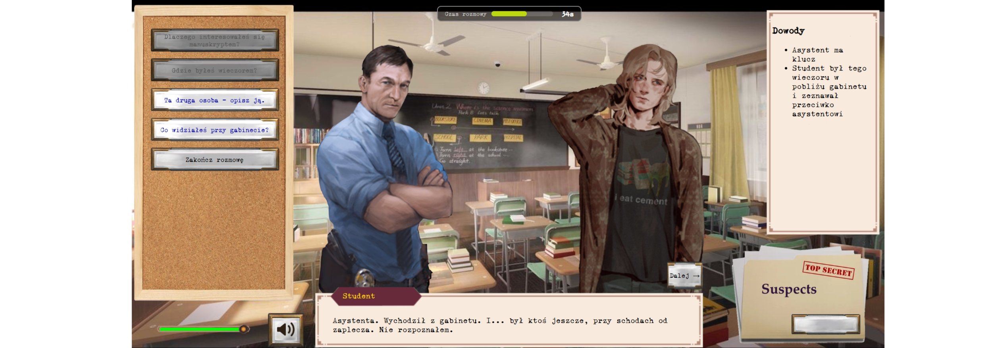
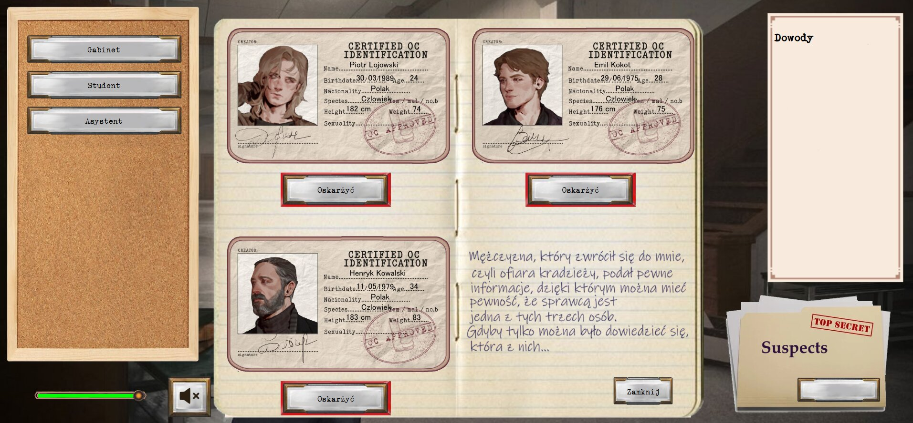

Detective
DetectiveDetective game
About
A detective visual novel in Polish that runs in the browser. A valuable manuscript has been stolen from a professor's office at a university, and the player has to find the thief among three suspects: a student, an assistant and another professor.
On every launch the game randomly picks one of three story versions, each with a different culprit. The suspects' answers and the endings change with it, so the same clues can point to a different person.

Image 1What it includes
- Three story variants with a random culprit chosen at the start
- Office investigation: the lock, the computer and its logs, emails, the camera and a drawer
- Interrogations where some questions unlock only after earlier answers
- Evidence notebook that fills up as the player finds clues
- Accusation with a separate ending for each suspect, right or wrong
- Background music and dialog boxes with character names
- Plain JavaScript with no framework, split into systems for scenes, dialogs, interrogations, evidence and endings

Image 2